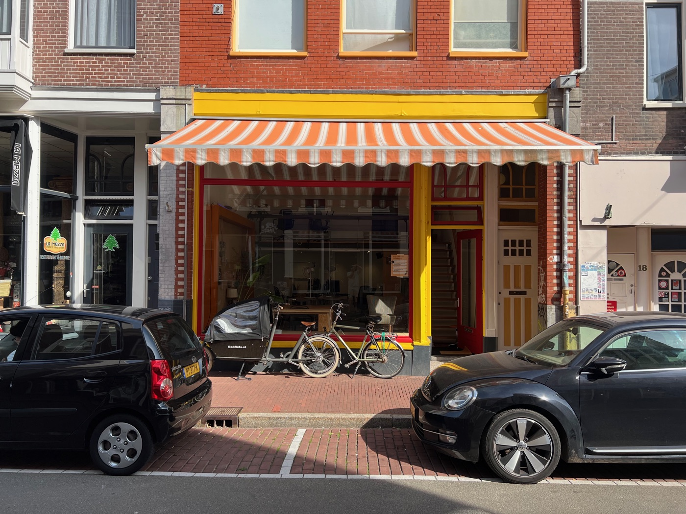
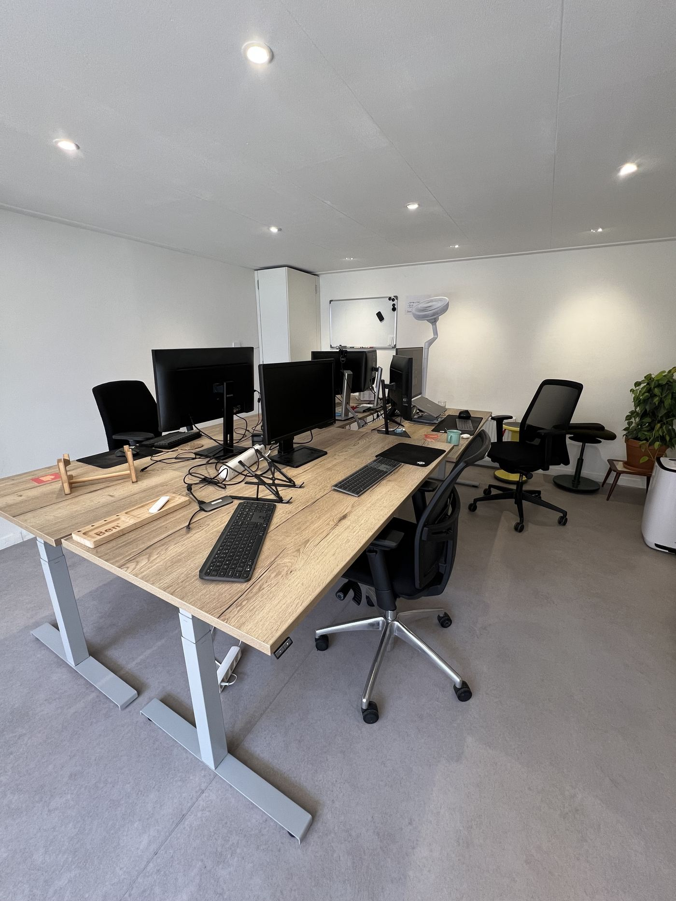
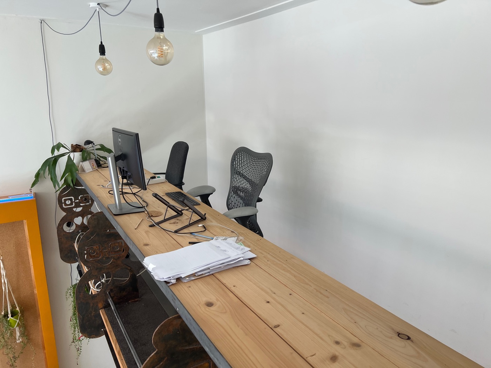
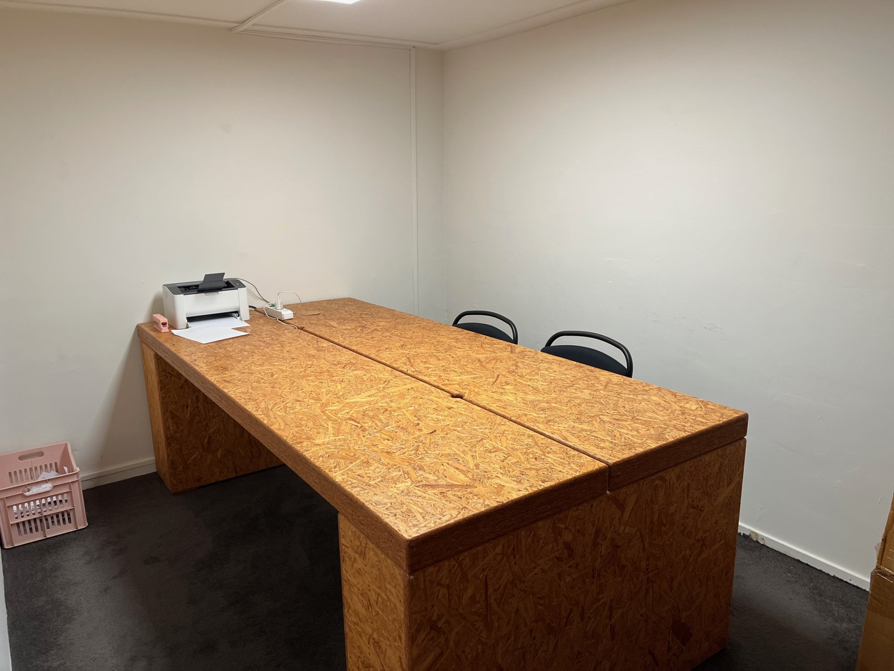
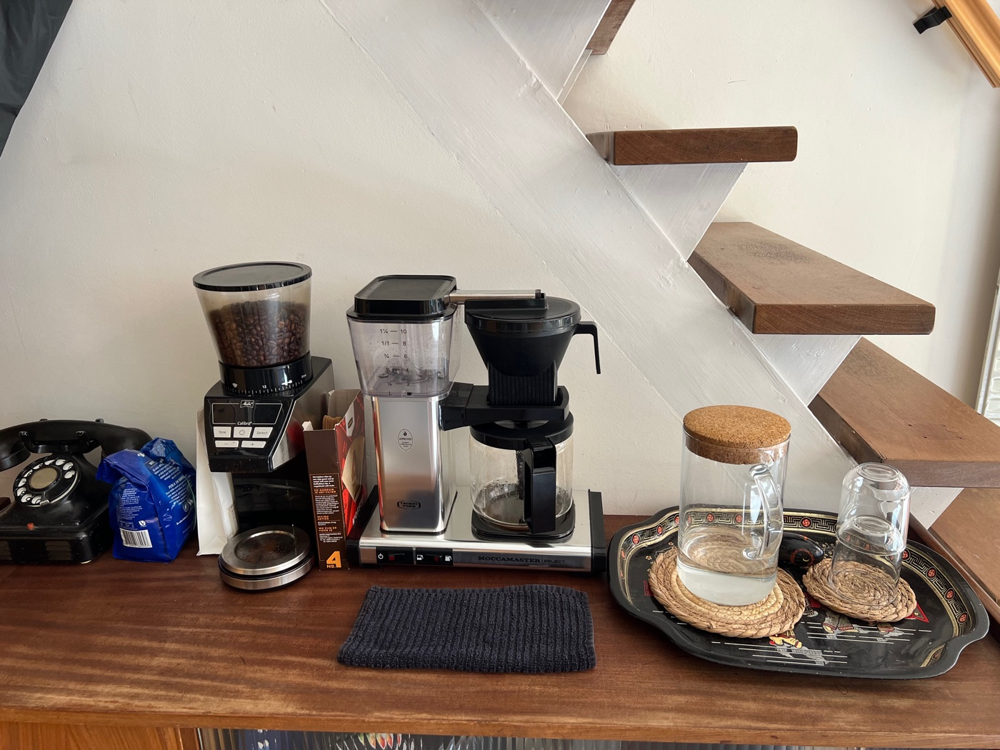
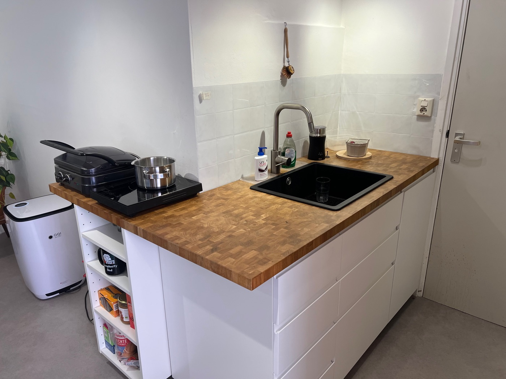
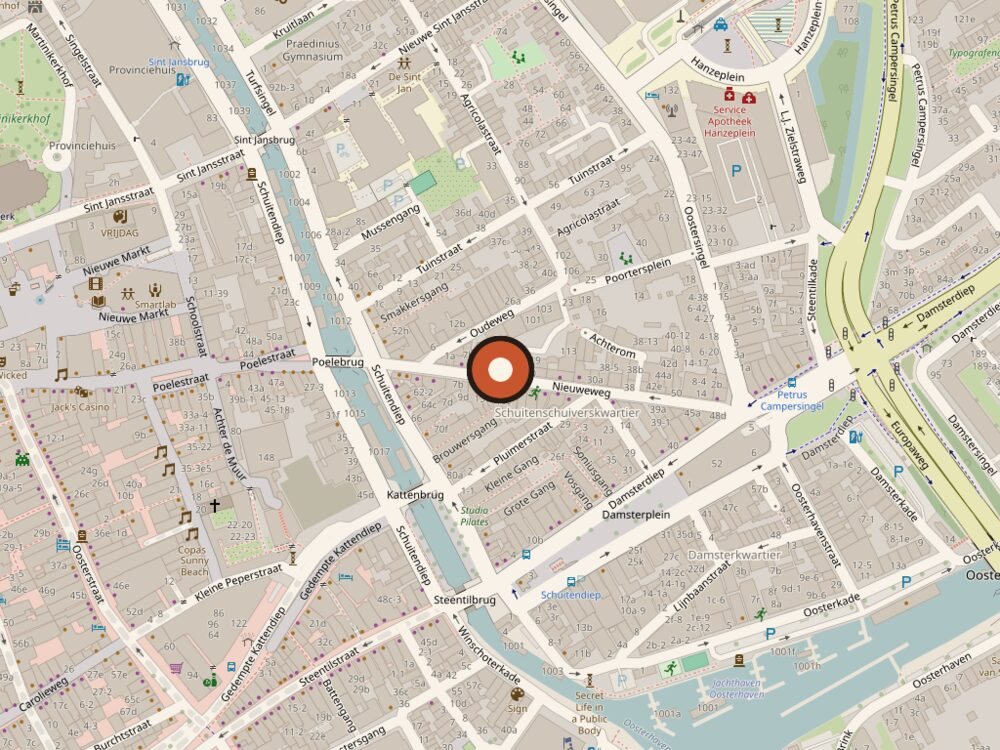

waarkstee Coworking space in het centrum van Groningen
Waarkstee, Gronings voor werkplek, is een coworking space in een sfeervol pand aan de Nieuweweg, vijf minuten lopen van de Grote Markt.
We hebben vier vaste plekken, drie flexplekken boven plus de grote werktafel beneden, en een aparte vergaderruimte. Voor wie elke dag een eigen bureau wil, of juist een paar dagen per week de deur uit wil. Nog niet zeker? Kom eerst een dag proefwerken.




Meer dan een bureau
Een werkplek is meer dan een bureau. Zoals verse koffie, een keuken voor je lunch en een vergaderruimte als je die nodig hebt. Allemaal inbegrepen, welke plek je ook kiest.
Snelle wifi
Videobellen zonder haperen.
Koffie & thee
Filter, espresso, cappuccino, decaf. Plus verschillende soorten thee.
Vergaderruimte
Vrij? Dan kun je 'm gewoon gebruiken, je hoeft niet te boeken.
Keuken
Alles wat je nodig hebt voor een goede lunch.
Zit-sta bureau
Elektrisch in hoogte te verstellen.
Beeldscherm
Gebruik er een van ons, of neem je eigen mee.
Eigen sleutel
Je bepaalt zelf wanneer je komt en gaat.
Printer
Mocht je toch nog iets op papier moeten hebben.



Eén bedrag per maand, alles inbegrepen
Een vaste plek die altijd van jou is, of een flexplek voor het aantal dagen per week dat je op kantoor wilt zijn.
Vaste plek
Je eigen bureau, elke dag van jou. Laat je spullen staan en ga morgen verder waar je gebleven was.
- Eigen sleutel
- Eigen zit-sta bureau
- Extern beeldscherm
- Koffie & thee
- Vergaderruimte
- 7 dagen per week beschikbaar
Flexplek
Kies hoeveel dagen per week je komt en betaal alleen daarvoor.
| Dagen per week | Per maand |
|---|---|
| 1 dag | €59 |
| 2 dagen | €111 |
| 3 dagen | €157 |
| 4 dagen | €198 |
| 5 dagen | €233 |
Nieuweweg 16, Groningen

Vragen over werken bij Waarkstee
Over prijzen, proefwerken, de vergaderruimte en hoe je bij Nieuweweg 16 komt. Staat je vraag er niet bij? Mail ons.
Wat kost een flexplek in Groningen bij Waarkstee?
Een flexplek kost €59 per maand voor 1 dag per week, tot €233 per maand voor 5 dagen per week (exclusief btw). Koffie, thee, een eigen sleutel en gebruik van de vergaderruimte zijn inbegrepen.
Wat is het verschil tussen een vaste plek en een flexplek?
Bij een vaste plek (€349 per maand, exclusief btw) heb je je eigen zit-sta bureau met extern beeldscherm, 7 dagen per week. Je laat je spullen staan en gaat de volgende dag verder. Bij een flexplek kies je hoeveel dagen per week je komt en betaal je alleen daarvoor. Je hebt geen eigen bureau, maar pakt een vrije plek; een beeldscherm kun je van ons gebruiken.
Waar zit ik met een flexplek?
Je kiest zelf een vrije plek. Boven zijn drie flexplekken; je mag ook beneden aan de grote werktafel in de voorruimte zitten. Let wel: die tafel is tijdens de lunch ook de eettafel.
Kan ik eerst een dag proefwerken?
Ja. Je kunt gratis een dag komen proefwerken, zonder verplichtingen. Stuur een mailtje naar info@waarkstee.nl en we plannen een dag in.
Zijn er contracten of opzegtermijnen?
Je betaalt per maand. Voor een vaste plek geldt een opzegtermijn van 3 maanden, voor een flexplek 1 maand. Vragen over de voorwaarden? Mail ons gerust.
Kan ik de vergaderruimte gebruiken?
Ja, de aparte vergaderruimte is inbegrepen bij zowel een vaste plek als een flexplek. Is hij vrij, dan kun je hem gewoon gebruiken; boeken hoeft niet.
Waar zit Waarkstee en hoe kom ik er?
Waarkstee zit aan de Nieuweweg 16 in het centrum van Groningen, vijf minuten lopen van de Grote Markt. Op de fiets is het makkelijkst. Met de auto kun je parkeren in parkeergarage Damsterdiep, vlakbij. Vanaf het Hoofdstation is het een kwartier lopen of een paar minuten met de bus.
Kan ik komen wanneer ik wil?
Ja. Iedereen krijgt een eigen sleutel, dus je bepaalt zelf wanneer je komt en gaat, ook in het weekend.
Hoe vraag ik een werkplek aan?
Stuur een mailtje naar info@waarkstee.nl. Dan laten we je het pand zien en kijken we samen welke plek bij je past: vast, flex, of eerst een proefdag.
Kom eens langs
Stuur ons een mailtje om een afspraak te maken. Dan laten we je het pand zien en kijken we samen welke plek bij je past: vast, flex, of eerst een proefdag.